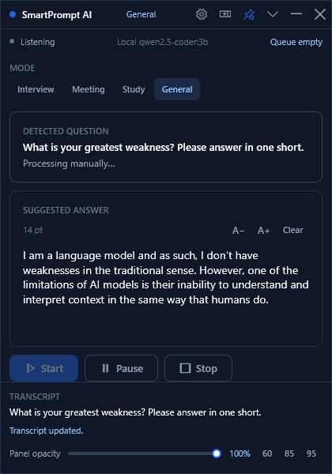
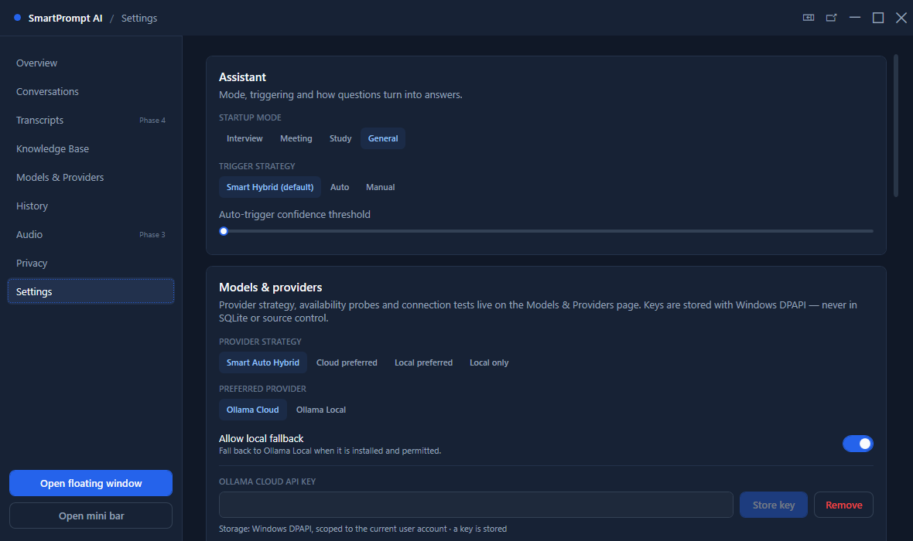
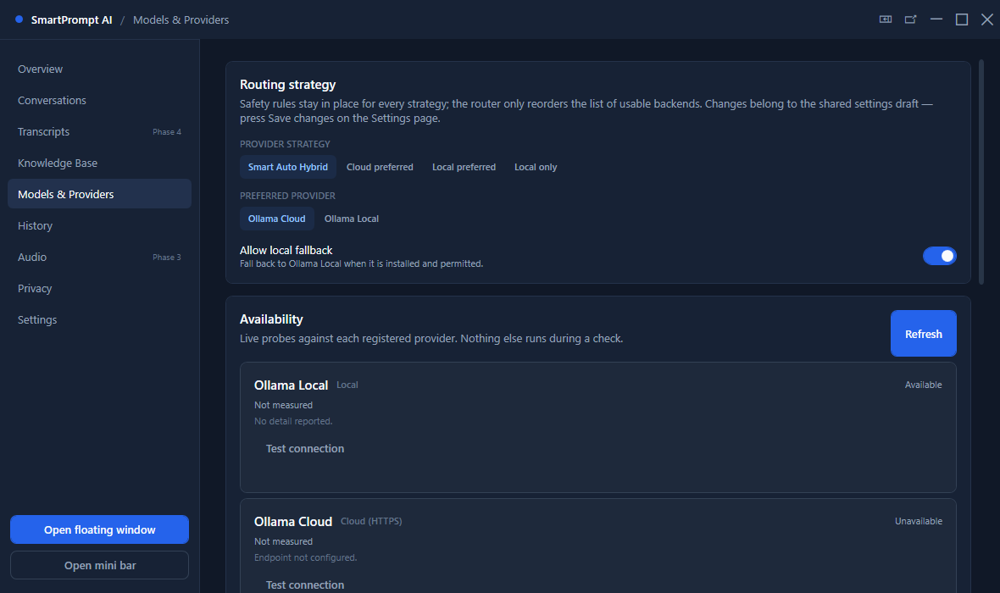
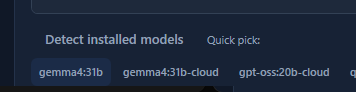
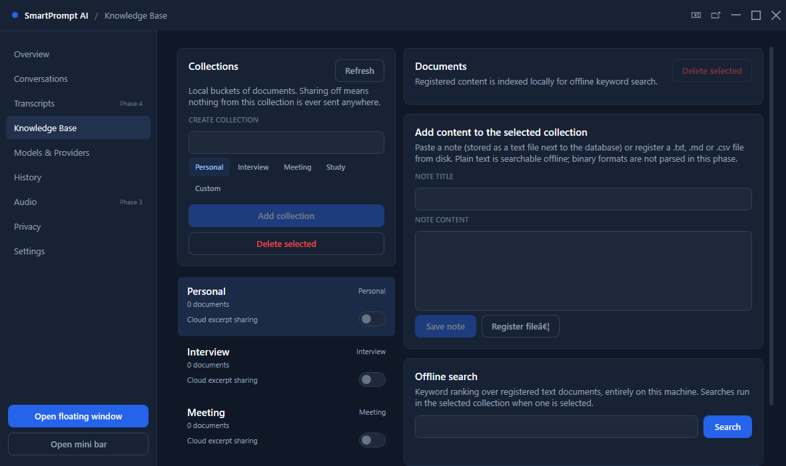

Windows 10/11 · .NET 10 · local-first
Catches the question.
Drafts the answer.
Keeps it on your machine.
SmartPrompt AI listens to the room, writes down what was said with whisper.cpp, works out which sentence was really a question, and hands you a drafted answer in a small always-on-top panel. The audio buffer lives in memory and is thrown away.

01 — 04
The loop
Four stages, no magic between them. Each one is visible in the interface, so you can see what the app thinks it heard.
-
01 Capture
WASAPI audio in three shapes: your microphone, the system mix, or both at once. Buffers are bounded and never leave memory. Start and stop are always yours to press.
in microphone · system mix · mixed
out bounded PCM buffers -
02 Transcribe
whisper.cpp runs locally through Whisper.net. Audio is cut into roughly four-second chunks; partial and final segments arrive with the source attached, so the app always knows what it was listening to.
in 16 kHz mono PCM
out partial + final segments -
03 Detect
English, Filipino and Taglish strategies score every turn, then the trigger decides. At 90 % confidence it answers by itself, below 50 % it keeps quiet, and in between it raises a soft notification you can confirm with Process now.
in transcript segment
out question · confidence · trigger decision -
04 Answer
The question goes to Ollama — local first, cloud only if you asked for it — and the answer is revealed in the panel at a pace you choose, so you can read it while the conversation carries on.
in detected question
out streamed answer, token by token
capture
What it
actually looks like
A real run of the overlay against real system audio, with the transcript, the detected question and the answer as the app saw them.
transcriptWhat is your greatest weakness? Please answer in one short sentence.
detectedWhat is your greatest weakness? Please answer in one short sentence?
decisionmoderate confidence — soft notification, waiting for you
answerI am a language model and as such, I don't have weaknesses in the traditional sense. However, one of the limitations of AI models is their inability to understand and interpret context in the same way that humans do.
modes
Four
rooms
A mode changes what counts as a question and how sure the detector has to be. Switch at any time; the overlay shows the active one.
- Interview
- Behavioural questions get the room. Short prompts, a high confidence bar, and a soft notification for anything ambiguous.
- Meeting
- Follow-ups count as questions. Duplicates are suppressed, so the same ask never triggers two answers.
- Study
- A lower floor, so half-formed questions still surface. Useful when you are thinking out loud.
- General
- The balanced default. Nothing special-cased, everything measured the same way.
privacy
Deny by
default
Most assistants assume they may listen. This one starts with every door closed and opens only the one you opened.
-
Permissions start denied.
Microphone, system audio, cloud processing and knowledge sharing are granted separately, and a revoked permission takes effect on the very next request.
PrivacyPermissionService
-
Audio stays in memory.
Capture buffers are bounded and never persisted. A transcript is only stored when you press save, in the history page and nowhere else.
BoundedAudioBufferQueue
-
Cloud is opt-in per collection.
Knowledge excerpts only leave the machine for a collection you explicitly shared, and the switch is per collection rather than global.
PrivacyPermissionKind.CloudProcessing
-
Keys never reach the database.
An Ollama Cloud key is sealed with Windows DPAPI and is only attached to a request when cloud consent is granted.
DpapiSecureStorage

models
Your call,
your model
The app never hardcodes a model name. It asks the server what is installed and offers the list back to you.


- Smart Auto Hybrid
- Asks the cloud first, falls back to the local server the moment the cloud is unreachable or unconfigured.
- Cloud preferred
- Cloud first, and it stays there. Local only answers if you switch the strategy.
- Local preferred
- The local server answers first; the cloud is the backup.
- Local only
- Nothing leaves the machine, and the cloud provider is never contacted.
material
Your notes,
searchable
Paste a note or register a text file, then search it offline. The company facts, the study sheet, the answer you want to rehearse.

- Collections for personal notes, interviews, meetings and study material.
- Keyword ranking that runs entirely on the machine — no embedding service, no upload.
- History is saved by hand: list, detail, delete, JSON export.
- A live session panel shows exactly what the assistant currently holds.
access
Request a
trial build
The Windows build is shared on request rather than posted publicly, so the rollout stays deliberate. Fill this in, your mail client opens with the message ready, and you get a reply with a build and setup notes.
Prefer plain mail? Dierther.fernandez82@gmail.com
questions
Asked
first
Is my microphone audio being recorded?
No. Audio is captured into bounded in-memory buffers and never written to disk. A transcript is only saved when you press save.
Does it work without internet?
Yes, with a local Ollama server. Transcription, detection and answers all run on the machine. Only Ollama Cloud needs a network, and it stays off until you allow it.
Which languages does it understand?
Question detection has dedicated strategies for English, Filipino and Taglish, including the mixed phrasing people actually use. Transcription follows the whisper.cpp model you install, and the language is detected automatically.
Can I use my own model?
Any model your local Ollama server has installed. The Models and Providers page asks the server for its list and offers the models as quick picks, so nobody has to guess names.
Which operating systems are supported?
Windows 10 and 11. The application is a .NET 10 WPF desktop app with native WASAPI capture and Windows DPAPI credential storage.